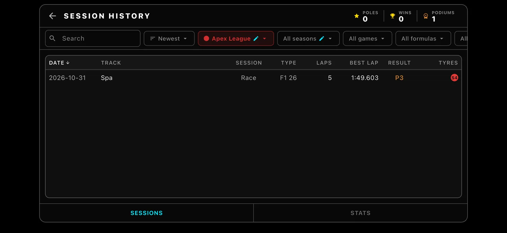
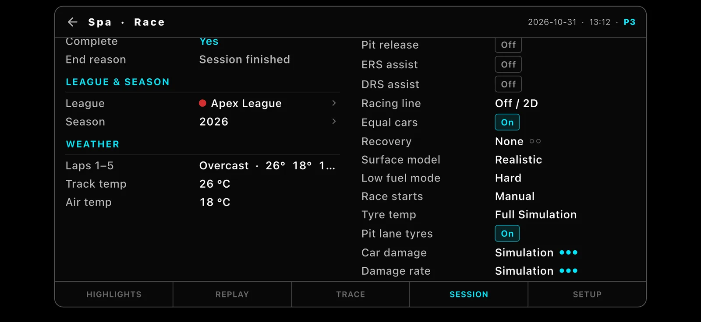

Free
- Creating leagues and tagging sessions you can open
- League and season filters
How it works
Group your league races and seasons, then filter Session History and your stats by them.
If you race in one or more leagues, tagging keeps each league's sessions together. Filter Session History or your stats by league and season to see how a championship is going, without your solo practice mixed in.

A league has to exist before you can tag a session with it.
Deleting a league never deletes a session. Sessions tagged with it simply stop showing a league.
If you have no leagues yet, the League row reads “No leagues”. Create one first, as in step 1.

Back on the SESSIONS tab, tap All leagues or All seasons to show one league or one season. The season list only offers years you have actually tagged. The STATS tab has the same league and season filters.